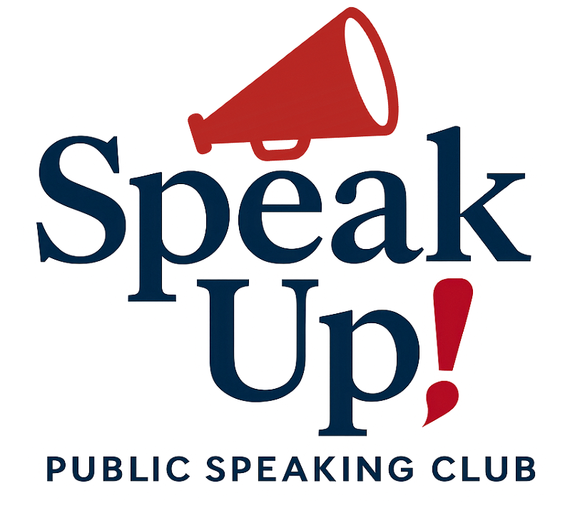

Confident presence
Students practice posture, eye contact, body language, and projecting a strong, clear voice.

A full school year of finding their voice
A joyful, structured public speaking program where students learn to speak clearly, think on their feet, and share their ideas with confidence.
Confidence before perfection
Fun, hands-on practice
A clear path to progress
More than an after-school activity
Students practice posture, eye contact, body language, and projecting a strong, clear voice.
They learn to organize ideas, speak in complete thoughts, and move from choppy sentences to a natural flow.
Games, challenges, and impromptu prompts help students respond thoughtfully in the moment.
A warm, encouraging group gives every child room to participate, take a risk, and be heard.
The Speak Up! journey
Each quarter unlocks a new rank, giving students a goal to work toward—even when busy seasons and sports compete for their time.
Quarter 1
Milestone: Find your voice
Quarter 2
Milestone: Build your message
Quarter 3
Milestone: Speak with confidence
Quarter 4
Milestone: Lead and inspire
Passport progress Students mark milestones as they grow—because progress deserves to be seen and celebrated.
Every Tuesday
Students learn by doing. Each session blends speaking games, team challenges, storytelling, reflection, and short presentations in a positive, age-appropriate setting.
No prior public speaking experience is needed. Shy speakers, enthusiastic talkers, and everyone in between are welcome.
Good to know
Not at all. Speak Up! is designed to meet students where they are and build confidence through small, encouraging steps.
Speak Up! follows the full school year. Skills build from quarter to quarter, with four ranks and a culminating showcase.
The rank system makes it easy to see where your child is in the journey. Activities reinforce core skills throughout the year so students can rejoin with confidence.
August is $30. After that, tuition is $60 per month. Payment may be made by cash, check, Venmo, or Cash App.
Tuesdays from 3:30 to 4:30 PM at The Episcopal Day School. The program is open to students in grades 1 through 6.
Enrollment
Complete the registration form to reserve your child’s place. Questions? Mrs. Guerra would be happy to help.
bguerra@episcopaldayschool.netSpeak Up! registration
Grades 1–6 • 3:30–4:30 PMTrouble seeing the form? Open it in a new window.